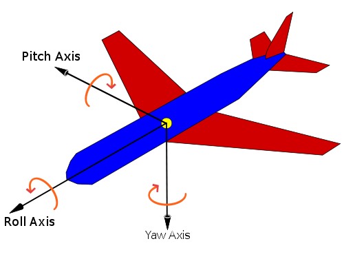

ofxAccelerometerHandler

class methods
- ofxAccelerometerHandler()
- exit()
- getForce()
- getMatrix()
- getOrientation()
- getRawAcceleration()
- setCallback()
- setForceSmoothing()
- setOrientationSmoothing()
- setup()
- update()
variables
This addon allows you access to the acceleromete on devices that support one. At the moment both Android and iOS are supported.
To get values from the accelerometer in polling mode, request them:
void testApp::setup(){
ofxAccelerometer.setup(); // this initializes the accelerometer
}
void testApp::update()
{
<a href="../math/ofVec3f.html" class="docs_class" >ofVec3f</a> accel = ofxAccelerometer.getForce();
<a href="../math/ofVec2f.html" class="docs_class" >ofVec2f</a> orientation = ofxAccelerometer.getOrientation();
}
To register an event handler for the accelerometer values changing, do something like the following:
ofAddListener(ofxAccelerometer.accelChanged,this,&ofApp::accelerationChanged);
exit()
void ofxAccelerometerHandler::exit()
Stops ofxAccelerometer from receiving updates from the underlying system.
getForce()
ofPoint & ofxAccelerometerHandler::getForce()
Gets the current smoothed accelerometer data (value in number of g's (1g = gravity, 9.8m/s^2). The smoothing prevents sudden spikes but can potentially make detecting gestures or other sudden moments difficult.
getMatrix()
GLfloat * ofxAccelerometerHandler::getMatrix()
This returns a 3x3 matrix with the following values set:
First column is gravity vector. Second column as an arbitrary vector in the plane perpendicular to the gravity vector {Gx, Gy, Gz} defined by by the equation "Gx * x + Gy * y + Gz * z = 0" in which we arbitrarily set x=0 and y=1. Third column as the cross product of the first two.
getOrientation()
ofPoint & ofxAccelerometerHandler::getOrientation()
Gets current orientation in degrees as an ofPoint (x: pitch, y: roll, z: not used).

getRawAcceleration()
ofPoint & ofxAccelerometerHandler::getRawAcceleration()
Gets current real accelerometer data (value in number of g's (1g = gravity, 9.8m/s^2)
setCallback(...)
void ofxAccelerometerHandler::setCallback(ofxAccelCB new_callback)
This allows you to set a callback that can be called whenever motion is detected.
setForceSmoothing(...)
void ofxAccelerometerHandler::setForceSmoothing(float forceSmoothing)
This sets amount of smoothing on force data (0: no smooth, 1:very smooth)
setOrientationSmoothing(...)
void ofxAccelerometerHandler::setOrientationSmoothing(float orientationSmoothing)
This sets amount of smoothing on orientation data (0: no smooth, 1:very smooth)
setup()
void ofxAccelerometerHandler::setup()
You must call setup() before polling ofxAccelerometer for force or orientation values.
update(...)
void ofxAccelerometerHandler::update(float x, float y, float z)
This is called by your underlying OS to update all the orientation matrices.
comments powered by Disqus
Thursday, 07 January 2016 15:34:55 UTC
에 마지막으로 업데이트됨 -
cdcc3ff1b3fb205df947d35acce8c66fe32c71f4
hosting for openFrameworks.kr is provided by github.com
comments
You can add comments with usage examples or other information for each class, method or variable, for adding documentation to an empty section or reporting errors is better to send a fix or open an issue through github.
When posting code enclose it in: